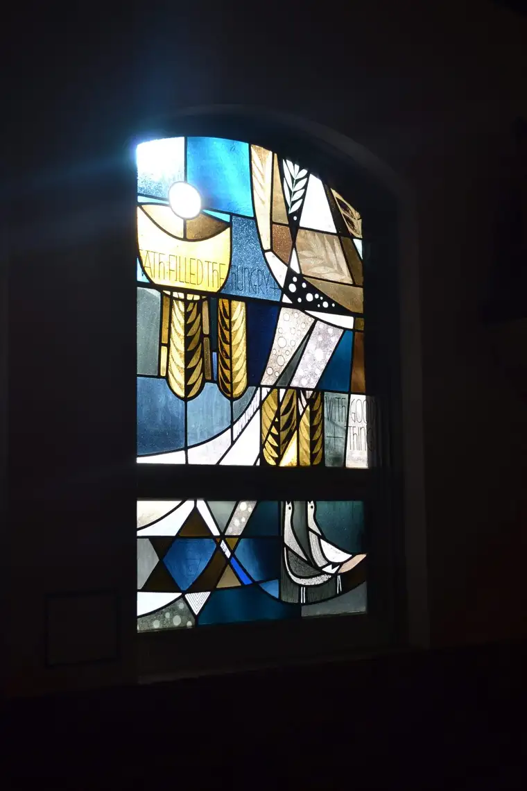
Recently, I embarked on a solo journey from the Plains of North Dakota through the sparkling lakes country of Minnesota and lush, forest lands of Wisconsin, bound for Green Bay, for the Catholic Media Conference hosted by the Catholic Press Association.As with all journeys, a pilgrim, even alone, is never truly by herself. I had my books-on-tape to offer mental stimulation, friends to meet along the way for companionship and reprieve, and many comrades, new and old, with whom to mingle at our common destination.
I came away from the week overwhelmed with information and inspiration, but one particular evening, our second there, stands out as a worthy takeaway.
It would be hard for me to imagine a trip these days without some kind of spiritual dimension. The evening we hopped on buses bound for The National Shrine of Our Lady of Good Help in Champion, Wis., provided just the nourishment our tired souls needed, for that night and the rest of the week.
After perusing the grounds, and hearing an introduction to the story of Adele Brise, to whom the Queen of Heaven, Our Lady of Good Help, appeared in 1859, along with Mass and a reception, we were invited to partake in a Rosary Walk.
After so much driving in the days prior, I found this peaceful trek around the grounds, and the recitation of the Joyful Mysteries, particularly edifying. Our group seemed especially contemplative as we followed the lead of the priest carrying the heavy, golden crucifix on our stroll past hay bales and religious markers.
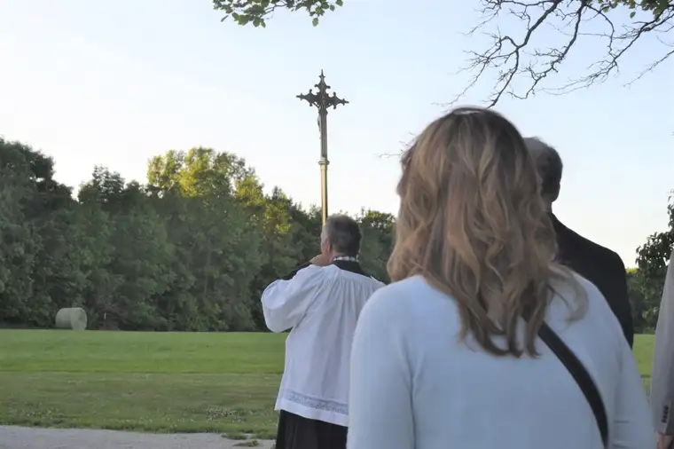

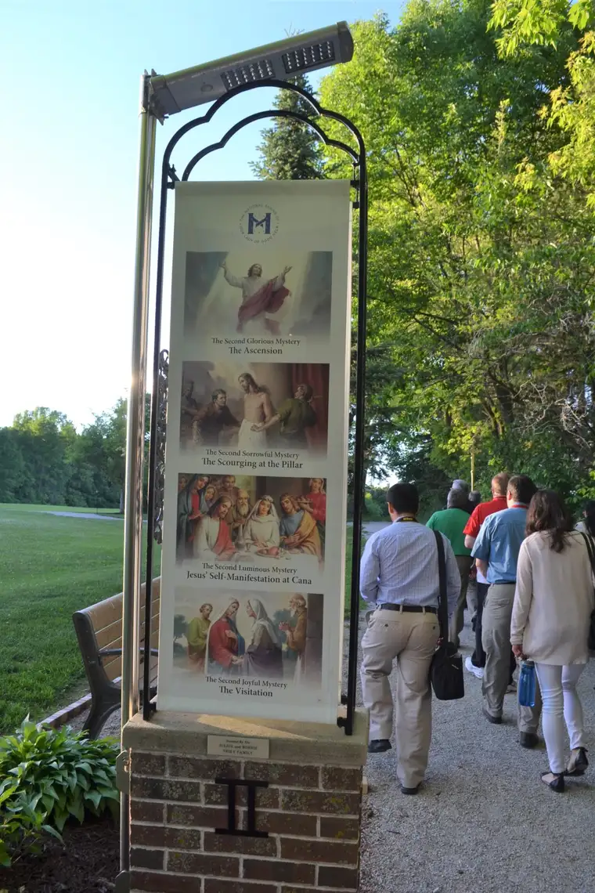

It was a beautiful night, that magical time in the evening when the sun begins its descent, providing a nice glow and casting myriad shadows upon the landscape. At one point, I looked to the left of us, and noticed our own dark, elongated likenesses moving mindfully across the grass. The solemn, serene advance of our group felt blissful to me, as if we were marching towards Heaven.
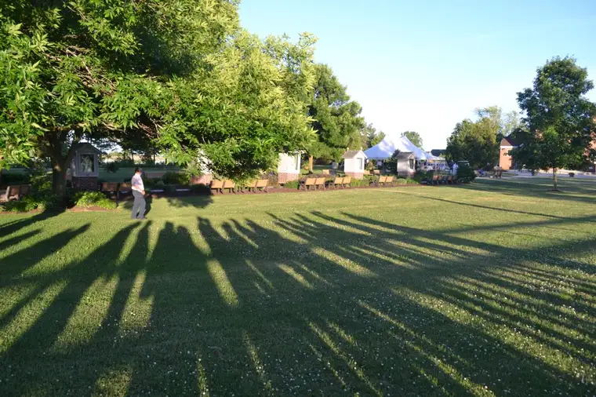
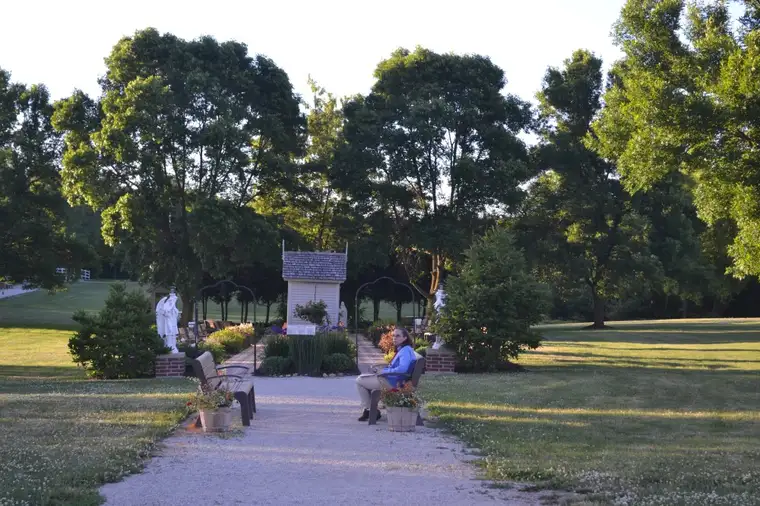
But it was the message just before our walk that made my own contemplation so meaningful. Impressed by a presentation given by a young religious who’d addressed us after the earlier Mass, I was glad to have a few moments with Fr. Broussard of the Fathers of Mercy community, to hear his personal thoughts about what he does there, and the shrine’s significance.
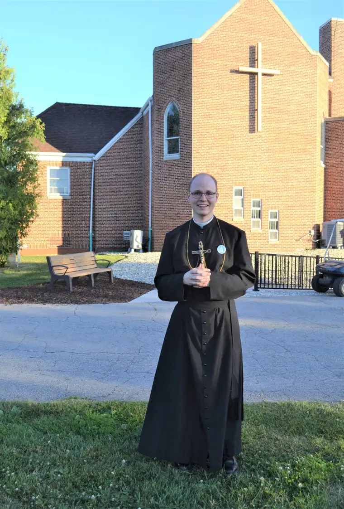
He shared how powerful it can be “to walk with people on their pilgrimages and witness their conversions and healing — sometimes physical and oftentimes spiritual; it’s a beautiful thing.”
Perhaps because I was so far from my family, I had my children especially on my mind, and asked him what advice he would have for parents in particular — especially those who carry the weight of worry for their children.
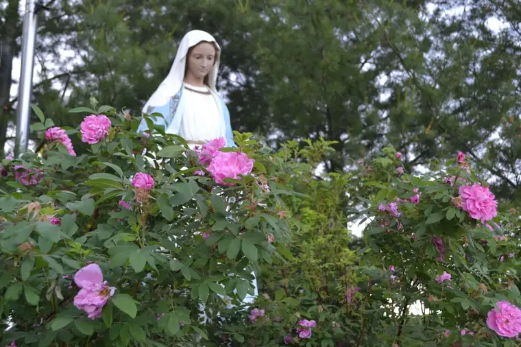
“The only perfect mom was the Blessed Mother,” he said. “I can’t tell you how many parents and grandparents come here praying for their children; children who have fallen away from the faith, or have other issues, whether physical, spiritual, and then that sense of direction and peace they get” when they visit.
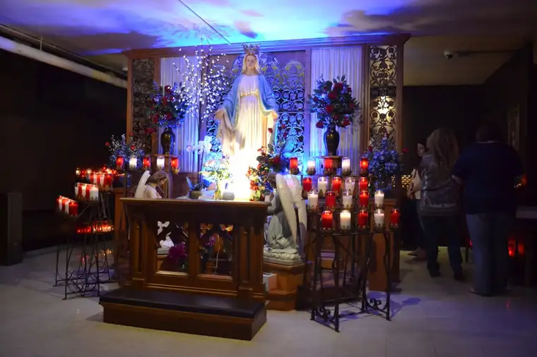
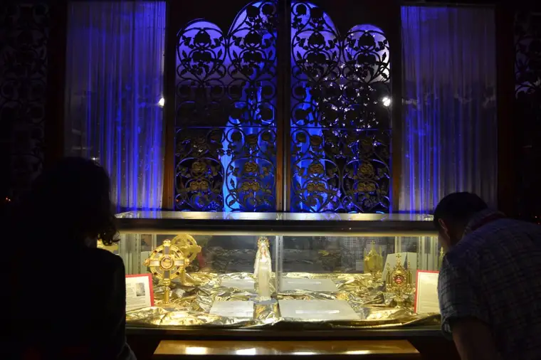
The culture, he said, can “very powerfully affect our children in ways we can’t fully appreciate or expect.” But we are not left without help. He reminded that just as we have sacraments as outward signs instituted by Christ to give grace, we also have sacramentals, outward signs instituted by the Church to give grace. “Taking advantage of these treasures of the Church is very important…there are great graces associated with coming to a place like this and praying the Rosary.”
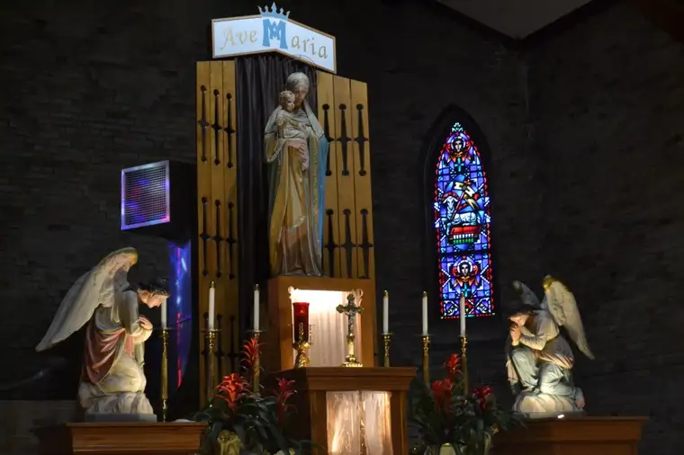
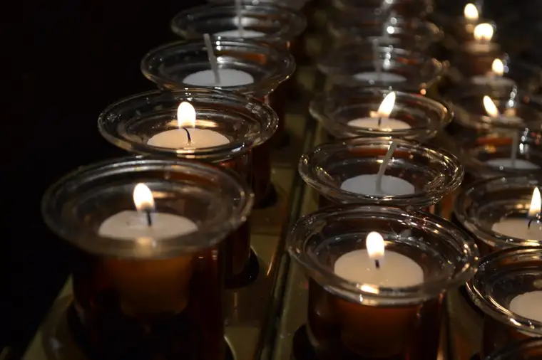
As for whether our prayers will be efficacious, Father said, “You get what you pray for.” “People who come here and pray for those graces, especially for their children, those prayers are heard. They might not always be answered in the ways expected, but they’re always heard and they’re always answered.”
Being reminded of this refreshed my will to continue praying without ceasing for my deepest concerns, and of God’s great mercy and love for us and our families.
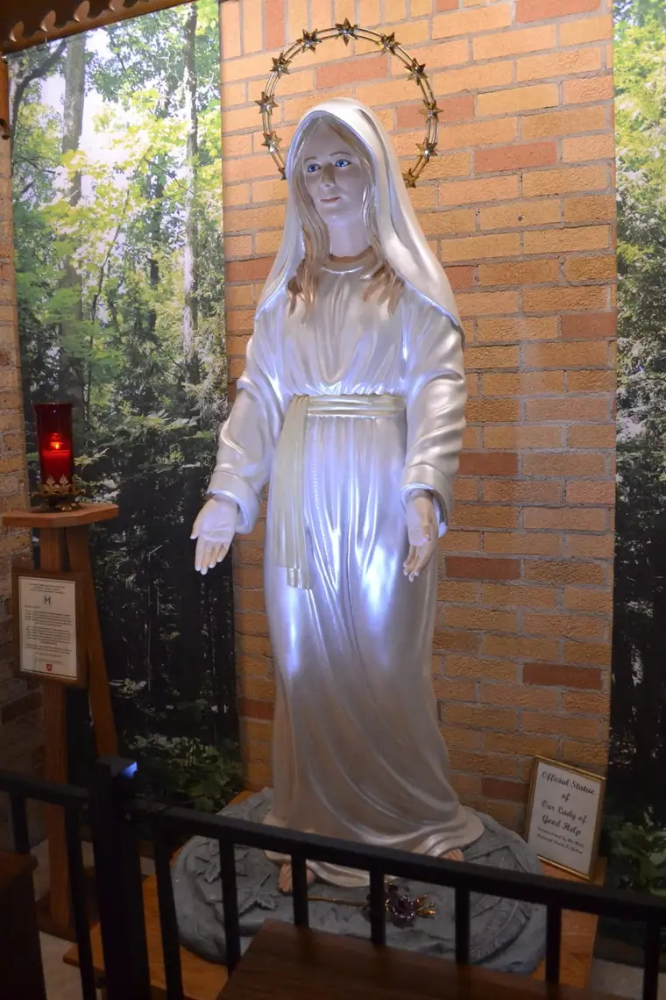
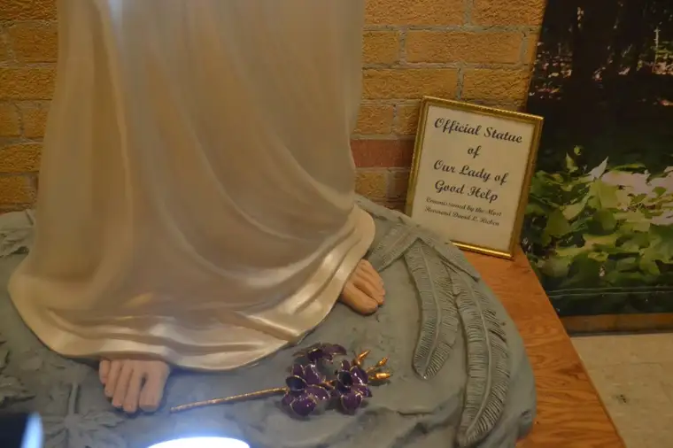
I left Green Bay and Champion with many treasures to hold in my heart, but this reminder I needed most, and most want to share. It was worth all the miles I covered along the way just to come back to the truth that God wants for us life in abundance; all we need to do is ask.
Learn more about The National Shrine of Our Lady of Good Help here.
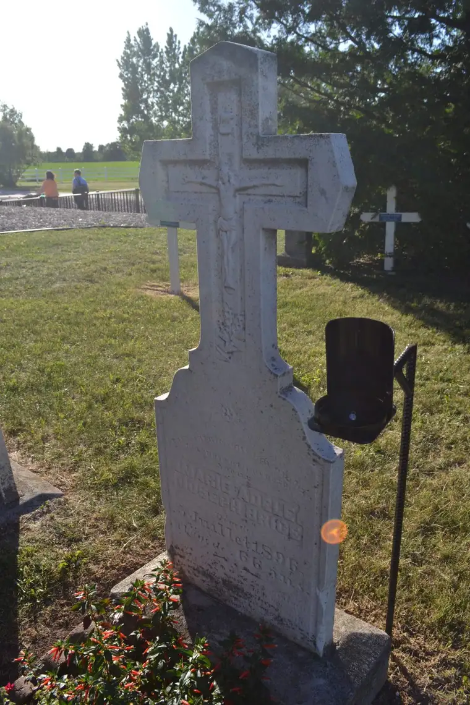

Q4U: Have you been to the National Shrine of Our Lady of Good Help, the only apparition site approved in the United States by the Catholic Church (in 2010)? I’d love to hear your takeaways.